UI/UX Design
Wireframing · Prototyping · User Flow · Design Thinking · Usability Testing
available for opportunities
Informatics fresh graduate exploring the space between systems, design, and quality.
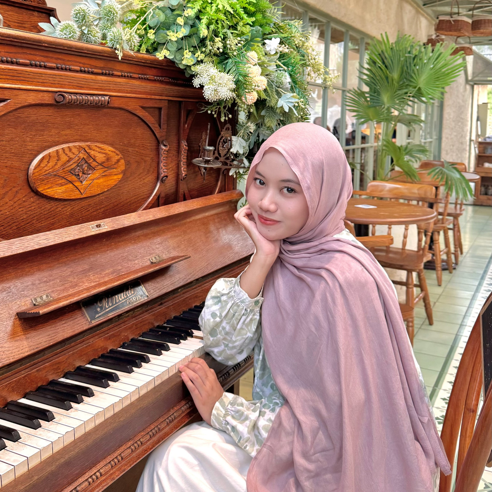
A little context
I'm an Informatics graduate from Universitas Islam Indonesia with hands-on exposure to software development, UI/UX design, system analysis, and functional testing.
During my internship at BRIN, I supported system analysis, UI/UX, documentation, and testing activities. I enjoy understanding how a system should work, how people will use it, and how to make the details make sense.
My hard skills cover the product development process from understanding user needs and designing solutions to building, testing, and organizing data.
Wireframing · Prototyping · User Flow · Design Thinking · Usability Testing
Requirement Gathering · Requirement Analysis · System Design · UML · Flowchart · ERD
Functional Testing · Test Scenario Design · Test Case · Usability Testing
Web · HTML · CSS · JavaScript · Mobile · Kotlin · Java · Game · Unity 2D · C#
SQL · MySQL · RDBMS · Database Normalization · Microsoft Excel · Google Sheets · Google Apps Script
During my internship at BRIN, I contributed to system analysis, UI/UX design, documentation, and functional testing across several internal applications.
I worked with different project requirements, translated them into structured designs and documentation, and supported functional testing to help ensure that the applications worked according to their intended requirements.

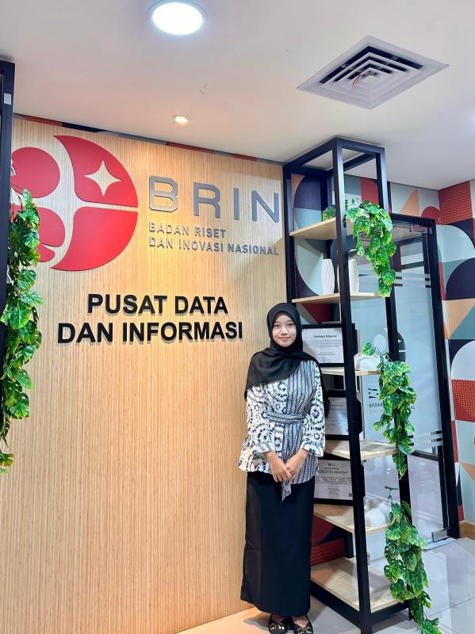
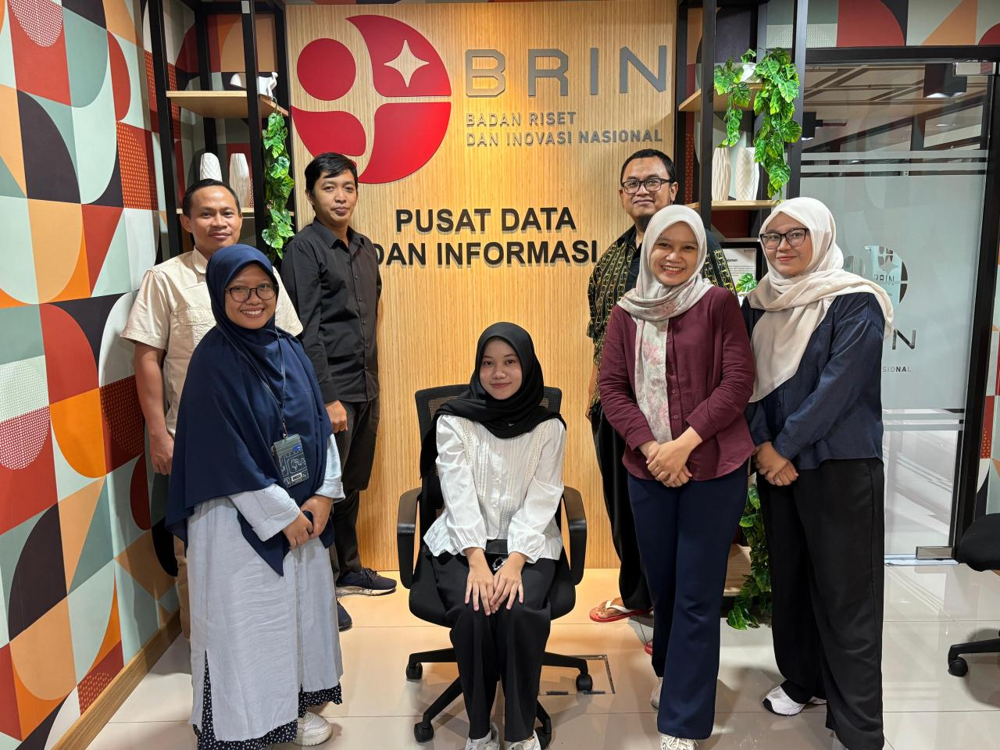
Analyzed system requirements and business processes, reviewed existing application flows, and translated requirements into structured system documentation, workflows, and user stories.
Designed and refined interfaces based on system requirements and existing application structures. I worked on wireframes, user flows, mockups, and interactive prototypes using Figma.
Conducted functional testing to verify that application features worked according to the defined requirements. I prepared test scenarios, checked expected results, documented findings, and reported issues.
Supported project documentation and data recaps, reviewed project information, and helped organize requirements, tasks, and development-related information.
A selection of UI/UX work I contributed to during the internship, from designing new applications to extending existing systems based on new requirements.
Konflik Kepentingan is an application designed to support the management of conflicts of interest within BRIN. I was independently responsible for designing the application's UI/UX based on requirements and business process analysis provided by the System Analyst.
I translated the analyzed requirements into wireframes, interface designs, and prototypes while ensuring the design aligned with the established business processes and functional requirements.
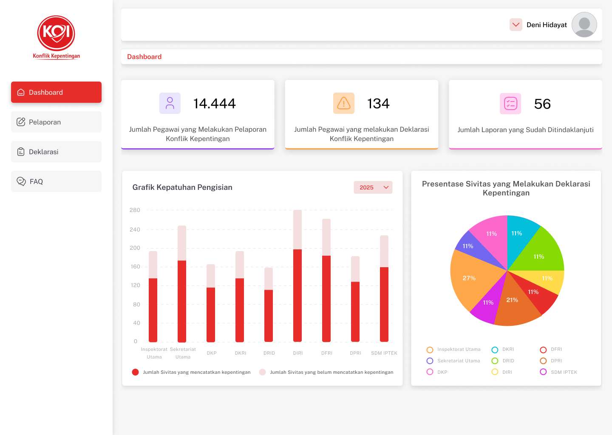


BRIN Innovations is an official BRIN application within the Rumah Inovasi Indonesia ecosystem, connecting research and innovation outputs with the public, industry, and investors.
I continued the existing UI/UX design by creating additional pages based on new requirements, adapting them to the existing structure, visual patterns, and user flows to maintain consistency across the application.


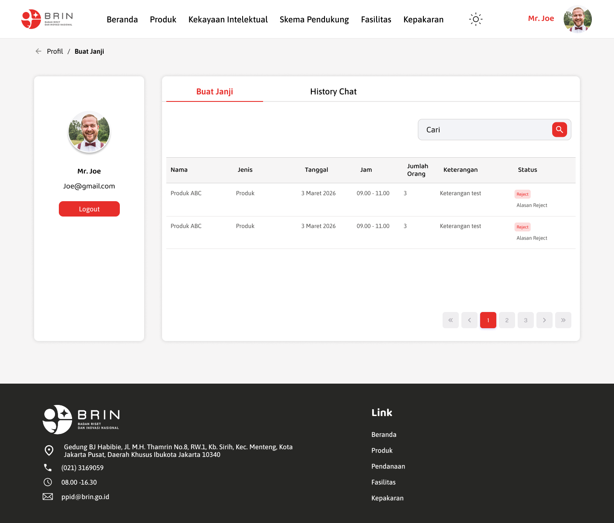
MANRISK supports risk management and monitoring processes within BRIN. The existing application required several new features based on user needs.
I independently designed the UI/UX for these additions by studying the existing application and business processes, then translating the requirements into new user flows and interface designs.

.png)

INTRA Mobile is an internal BRIN application providing employees with access to services and information such as attendance, announcements, forums, logbooks, and publications.
I contributed to the UI/UX design process by translating requirements into interface layouts and user flows while maintaining consistency with the application's existing design.
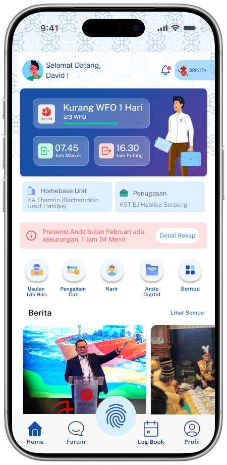


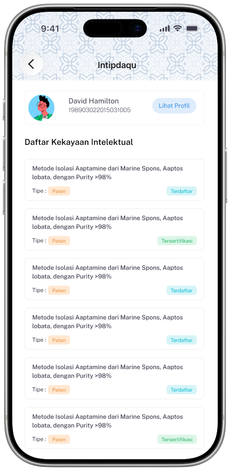

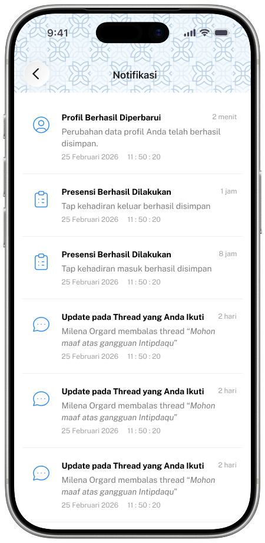


SIGMA is an internal application supporting the material transfer process within BRIN, involving several roles such as Applicant, Secretariat, Expert Team, Commission, and Admin.
I contributed to understanding the requirements and designing the interface and user flows for the application, taking into account the different roles and processes involved in the system.
.png)


.png)

A mix of system analysis, UI/UX, development, testing, and one slightly nerdy game project.
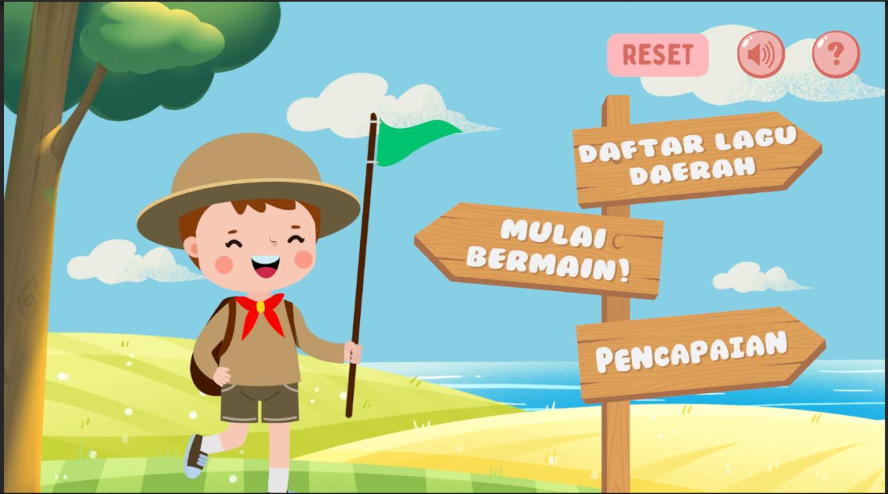
2D educational game for Indonesian traditional songs. Built with Unity and C#, covering requirement analysis, game flow, interface, implementation, functional testing, and usability testing.
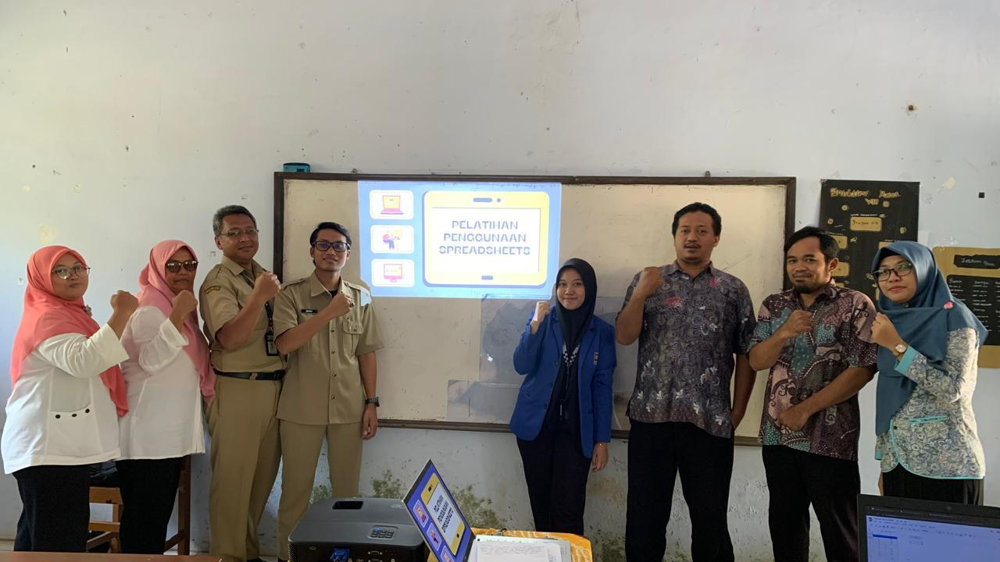
Designed and delivered hands-on Google Sheet training for 8 junior high school teachers, focusing on basic formulas and simple data processing for student grade data. Independently developed learning materials and practical exercises, then evaluated the training through participant feedback.
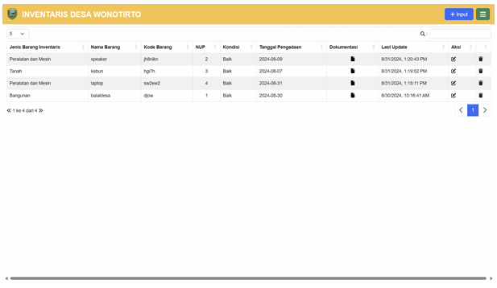
Simple inventory management system using Google Apps Script and Google Sheets, with input, storage, update, retrieval, and testing workflows.

2D hidden-object game. Contributed gameplay concept, visual assets, logic implementation, flowcharts, and functional testing.
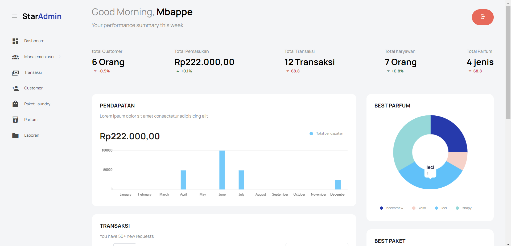
Laundry business management website. Contributed process flows, frontend features, database mapping, and decision-support visualizations.
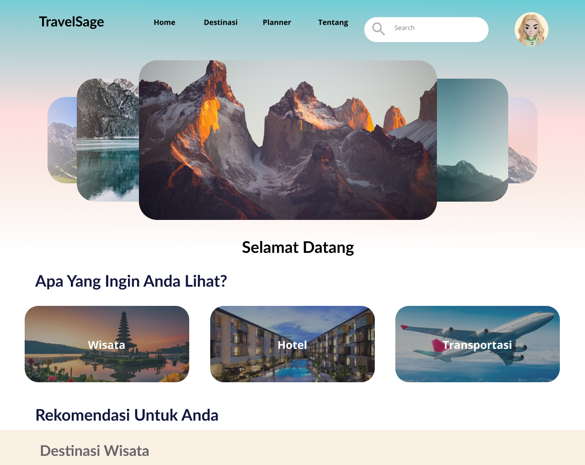
Travel planning website where design thinking was used to identify user problems and shape interface solutions, wireframes, and interactive prototypes.
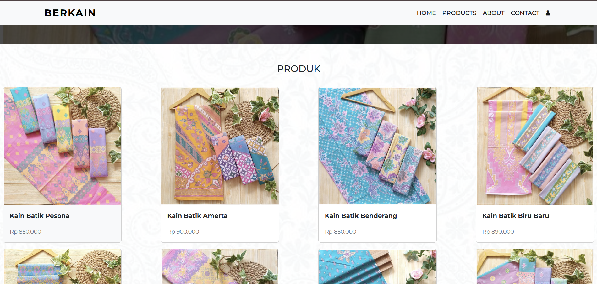
MOST FAVORITEBatik e-commerce website. Served as System Analyst, gathering requirements from two business owners and translating them into workflows, wireframes, frontend features, and testing.
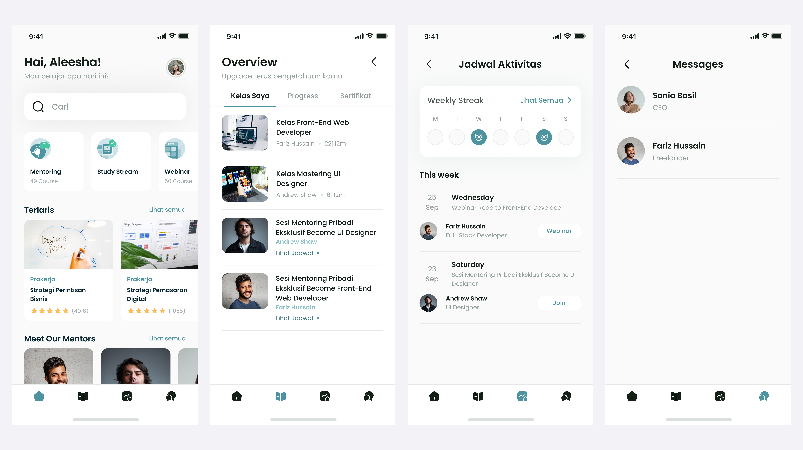
BEST PROJECTSoft-skills development mobile app. Identified user problems, interviewed 10 target users, then translated insights into requirements, user flows, wireframes, and prototypes.
Organizational work that taught me a different kind of problem-solving: keeping people, schedules, documents, and money moving.

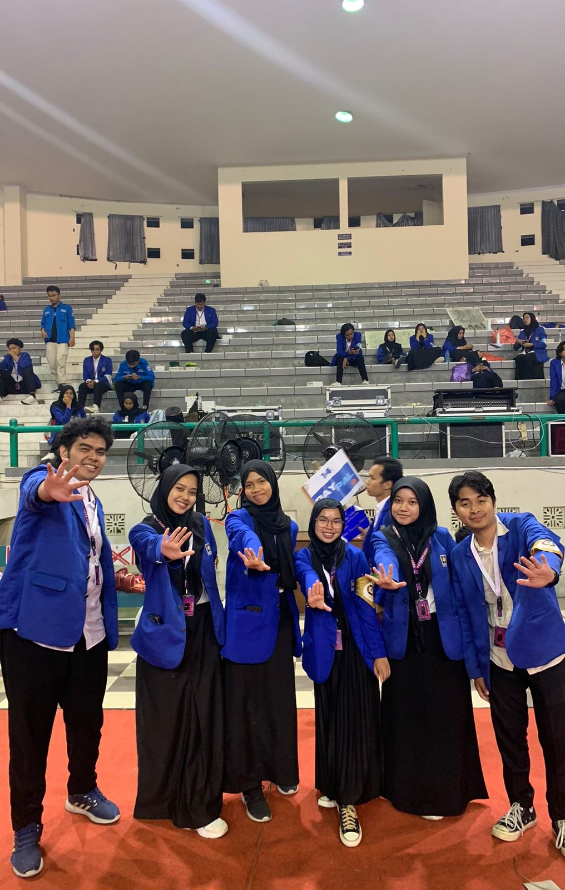
Secretary · Faculty Orientation Committee
Coordinated event schedules, prepared meeting minutes and official correspondence, maintained administrative records, and supported communication across 8 divisions.

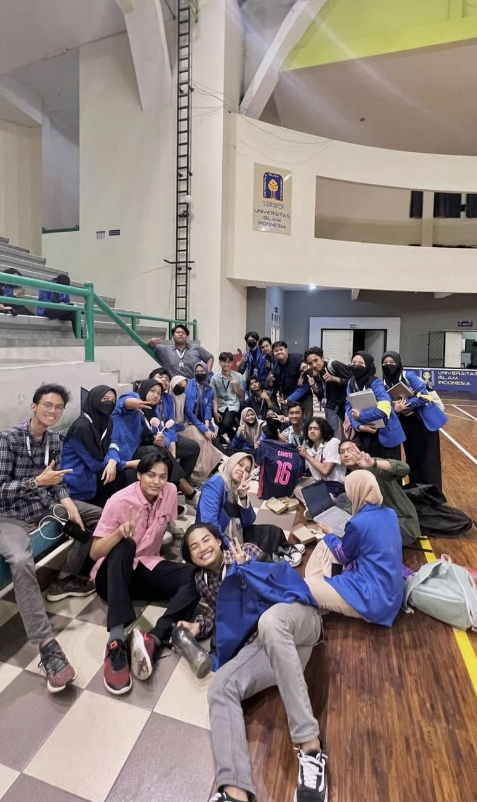
Treasurer · Informatics Competition
Managed budgeting, fund allocation, financial records, and the final accountability report while coordinating financial needs with the committee head and 7 divisions.